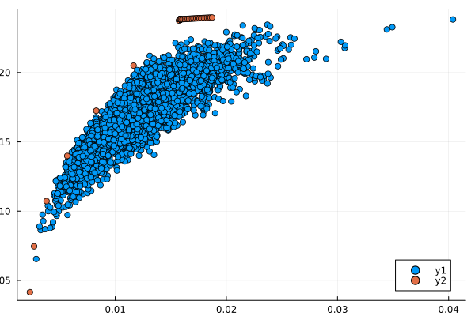

Planning tools
Modern Portfolio Theory (MPT)
The modern portfolio theory (MPT) is one of the oldest applications in modern finance still used today. The technical implication can be found in the theory subsection. We will now demonstrate how MPT is implemented in the Peccon package and lastly cover some import limitations and recommendations of the tool.
Example
First extract the daily price data of all the assets you are considering in your portfolio.
using Peccon
Tickers = ["IUSA.AS", "IBCI.AS", "IEMA.AS", "WTCH.AS", "VWRL.AS"];
# data = data_alpha(Tickers, "your_api_key", 252);
data[1][1:5,:]5 rows × 7 columns
| timestamp | open | high | low | close | volume | ticker | |
|---|---|---|---|---|---|---|---|
| SubStrin… | Float64 | Float64 | Float64 | Float64 | Int64 | String | |
| 1 | 2024-10-04 | 51.446 | 52.253 | 51.426 | 51.858 | 81590 | IUSA.AS |
| 2 | 2024-10-03 | 51.451 | 51.626 | 51.256 | 51.513 | 25186 | IUSA.AS |
| 3 | 2024-10-02 | 51.285 | 51.562 | 51.12 | 51.562 | 72474 | IUSA.AS |
| 4 | 2024-10-01 | 51.504 | 51.781 | 51.12 | 51.354 | 44604 | IUSA.AS |
| 5 | 2024-09-30 | 51.107 | 51.233 | 50.85 | 51.232 | 32954 | IUSA.AS |
Then calculated the daily log returns for each asset in the portfolio.
returns = daily_returns(data, Tickers);
returns[1:5,:]5 rows × 5 columns
| IUSA.AS | IBCI.AS | IEMA.AS | WTCH.AS | VWRL.AS | |
|---|---|---|---|---|---|
| Float64 | Float64 | Float64 | Float64 | Float64 | |
| 1 | 0.0 | 0.0 | 0.0 | 0.0 | 0.0 |
| 2 | 0.00667501 | -0.00264281 | 0.00917615 | 0.00703769 | 0.00669219 |
| 3 | -0.000950764 | 0.0 | -0.00401685 | 0.00603439 | -0.00351102 |
| 4 | 0.00404214 | -0.0013836 | 0.0186653 | 0.00925321 | 0.00639286 |
| 5 | 0.00237849 | 0.00671973 | 0.00422499 | -0.0125373 | 0.00160462 |
Subsequently, simulate 5000 possible portfolio combinations with the assets in the portfolio.
port_sim = sim_mpt(returns);
port_sim[1:5,:]5 rows × 8 columns
| exp_return | port_var | weight_IUSA.AS | weight_IBCI.AS | weight_IEMA.AS | weight_WTCH.AS | weight_VWRL.AS | port_std | |
|---|---|---|---|---|---|---|---|---|
| Float64 | Float64 | Float64 | Float64 | Float64 | Float64 | Float64 | Float64 | |
| 1 | 0.205036 | 0.0105782 | 0.250035 | 0.218211 | 0.20729 | 0.229746 | 0.0947172 | 0.10285 |
| 2 | 0.215548 | 0.0118772 | 0.27052 | 0.12315 | 0.2419 | 0.197001 | 0.167429 | 0.108983 |
| 3 | 0.242768 | 0.0173909 | 0.0134346 | 0.0389105 | 0.0734711 | 0.38999 | 0.484194 | 0.131874 |
| 4 | 0.225259 | 0.0136875 | 0.133088 | 0.0850236 | 0.138443 | 0.265624 | 0.377821 | 0.116994 |
| 5 | 0.191175 | 0.00882783 | 0.27233 | 0.304296 | 0.197177 | 0.211068 | 0.0151296 | 0.0939566 |
Plot the expected return and variance of each simulated portfolio to visualize the efficient frontier.
using StatsPlots
@df port_sim scatter(:port_var, :exp_return)
savefig("sim_fig.svg"); nothing # hide Resolving package versions...
Updating `~/work/Peccon.jl/Peccon.jl/docs/Project.toml`
[f3b207a7] + StatsPlots v0.15.7
No Changes to `~/work/Peccon.jl/Peccon.jl/docs/Manifest.toml`
qt.qpa.xcb: could not connect to display
qt.qpa.plugin: From 6.5.0, xcb-cursor0 or libxcb-cursor0 is needed to load the Qt xcb platform plugin.
qt.qpa.plugin: Could not load the Qt platform plugin "xcb" in "" even though it was found.
This application failed to start because no Qt platform plugin could be initialized. Reinstalling the application may fix this problem.
Available platform plugins are: minimalegl, eglfs, linuxfb, offscreen, vkkhrdisplay, xcb, vnc, minimal.
Aborted (core dumped)
connect: Connection refused
GKS: can't connect to GKS socket application
GKS: Open failed in routine OPEN_WS
GKS: GKS not in proper state. GKS must be either in the state WSOP or WSAC in routine ACTIVATE_WS
calculate the efficient frontier of the combinations of stocks.
port_opt = opt_mpt(returns, 0.0:0.02:2.0, 0.00) ;
port_opt[1:5,:]5 rows × 9 columns
| exp_return | port_var | risk_aversion | weight_IUSA.AS | weight_IBCI.AS | weight_IEMA.AS | weight_WTCH.AS | weight_VWRL.AS | port_std | |
|---|---|---|---|---|---|---|---|---|---|
| Float64 | Float64 | Float64 | Float64 | Float64 | Float64 | Float64 | Float64 | Float64 | |
| 1 | 0.0882839 | 0.00263038 | 0.0 | 0.0828501 | 0.81108 | 1.84891e-14 | 2.78365e-16 | 0.10607 | 0.0512872 |
| 2 | 0.113691 | 0.00291522 | 0.02 | 0.286404 | 0.683147 | 0.0304495 | 2.80248e-16 | 2.41962e-15 | 0.0539928 |
| 3 | 0.137787 | 0.0037535 | 0.04 | 0.411811 | 0.547105 | 0.041084 | 5.0886e-17 | 1.61119e-16 | 0.0612658 |
| 4 | 0.161883 | 0.00515064 | 0.06 | 0.537219 | 0.411062 | 0.0517185 | 9.15228e-17 | 1.57883e-16 | 0.0717679 |
| 5 | 0.185979 | 0.00710663 | 0.08 | 0.662627 | 0.27502 | 0.062353 | 2.26632e-16 | 2.40131e-16 | 0.0843008 |
In the dataframe the optimal portfolios with their respective risk-aversions are shown.
subsequently, add the efficient frontier to the simulated plot.
@df port_opt scatter!(:port_var, :exp_return)
savefig("opt_fig.svg"); nothing # hideqt.qpa.xcb: could not connect to display
qt.qpa.plugin: From 6.5.0, xcb-cursor0 or libxcb-cursor0 is needed to load the Qt xcb platform plugin.
qt.qpa.plugin: Could not load the Qt platform plugin "xcb" in "" even though it was found.
This application failed to start because no Qt platform plugin could be initialized. Reinstalling the application may fix this problem.
Available platform plugins are: minimalegl, eglfs, linuxfb, offscreen, vkkhrdisplay, xcb, vnc, minimal.
Aborted (core dumped)
connect: Connection refused
GKS: can't connect to GKS socket application
GKS: Open failed in routine OPEN_WS
GKS: GKS not in proper state. GKS must be either in the state WSOP or WSAC in routine ACTIVATE_WS
Lastly, calculate the sharp ratio to find the portfolio with the optimal return variation ratio
port_sim_sharp = sharp_ratio(port_sim) ;
@show port_sim_sharp[end,:]
port_opt_sharp = sharp_ratio(port_sim) ;
port_opt_sharp[end,:]DataFrameRow (9 columns)
| exp_return | port_var | weight_IUSA.AS | weight_IBCI.AS | weight_IEMA.AS | weight_WTCH.AS | weight_VWRL.AS | port_std | sharp_ratio | |
|---|---|---|---|---|---|---|---|---|---|
| Float64 | Float64 | Float64 | Float64 | Float64 | Float64 | Float64 | Float64 | Float64 | |
| 5000 | 0.162485 | 0.00533581 | 0.439489 | 0.414223 | 0.0883407 | 0.0416812 | 0.0162664 | 0.0730466 | 1.95061 |
limitations
There are three main limitation to this tool. The first limitation is that the MPT is a historical measurement of the portfolio performance. It does not say anything about future performance of the portfolio. Different Macro-economic situations might lead to total different end results. The second issue is that the tool is based on the expected return and variance of the portfolio. This captures the risk return relationship quite well but it does not take into account skewness and tail risk. It therefore gives rise to a reduced volatility and an inflated growth rate for a portfolio. Lastly, the risk measurement is probabilistic in nature. It does not reflect the structural roots of the risk. For example, the risk of a stock are off a total different nature then that of a commodity, but to tool will still account for them the same way.
Recommended usage
Never use this tool for individual stock picking and never but then also never rely only on the MPT. Always do your own due diligence before creating your portfolio and again this is no way or form financial advice.
So why should you use this tool and for what purpose? It is highly recommended to use this tool with exchange traded funds (ETF) as these products are already substantially diversified and issue two of the MPT is therefore greatly diminished. Also, the structural risk that certain ETF are exposed is difficult the estimate and the MPT can help you gain insights into which ETF have less or more risk compared to the returns they offer. Lastly, MPT also works better if you invest in all assets classes as each class has risks of a different nature and you are then therefore not fully exposed to one particular kind of risk.
To know which portfolio weights you should apply, you have to understand your risk preference. If you do not want to take a lot of risk, it is beneficial to look at optimal portfolio's with low values in $P$. The reverse is true for people who are risk seeking.